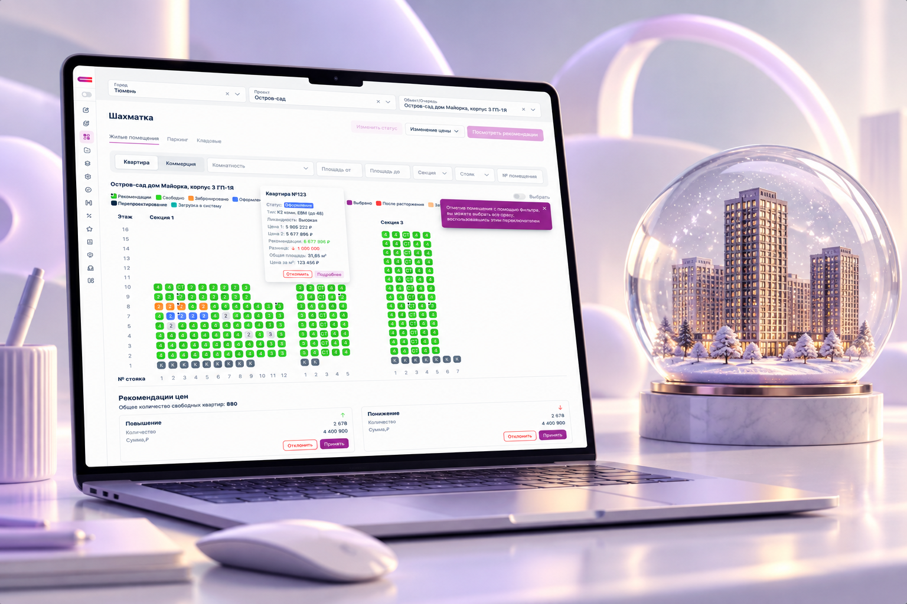
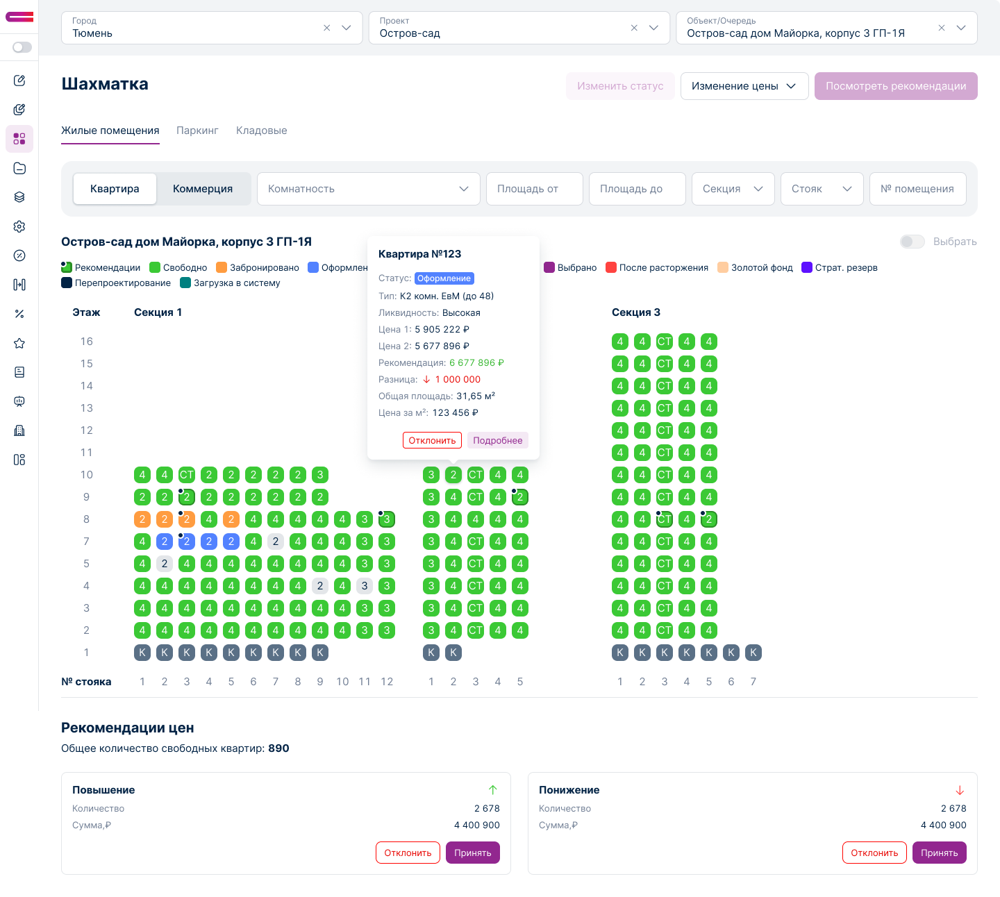
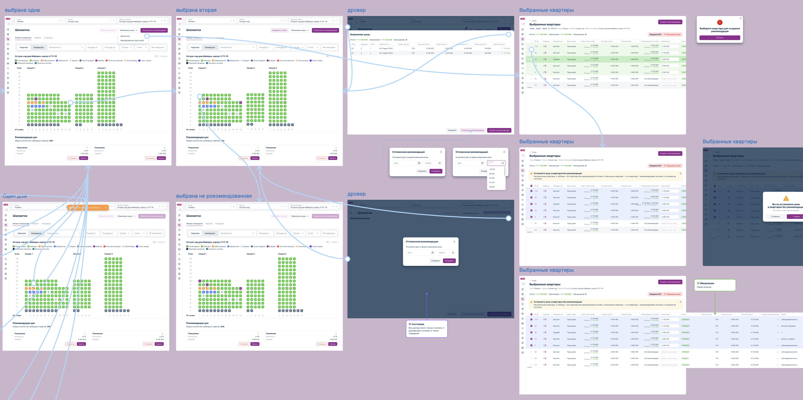
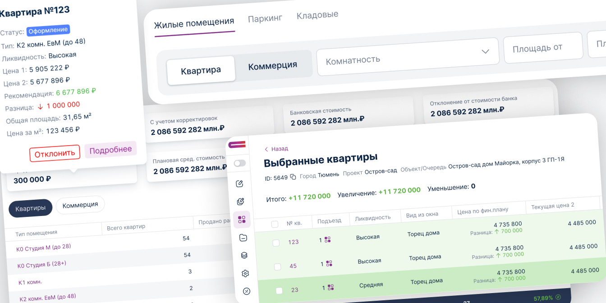

03
Система динамического ценообразования — шахматка квартир
Спроектировал и внедрил новый интерфейс шахматки для управления квартирами и ценами внутри корпоративного продукта.

01
Контекст
Система динамического ценообразования — веб-приложение для управления процессами девелопмента и продаж. Одним из ключевых сценариев стала «Шахматка» — инструмент для работы с квартирами, их статусами и ценами. Команда решила развивать собственное решение внутри продукта вместо использования стороннего сервиса.

02
Что было сделано
Изучил решения и сценарии работы с шахматками на рынке, чтобы определить привычные пользователям паттерны и сформировать структуру собственного инструмента. Спроектировал ключевые пользовательские сценарии: просмотр структуры объекта, состояния квартир, работу с ценами и внесение изменений. Собрал интерактивный прототип и проверил его на реальных сотрудниках компании.
-

Исследование
Изучил существующие решения и сценарии работы с шахматкой квартир.
-

Архитектура
Спроектировал структуру инструмента, фильтры, состояния квартир и основные действия
-
Прототип
Собрал интерактивный прототип и проработал ключевые пользовательские сценарии
-
Тестирование
Протестировал прототип с сотрудниками и доработал интерфейс по результатам
Проверил сценарий
на реальных пользователях
Собрал интерактивный прототип ключевого пользовательского сценария и протестировал его с тремя сотрудниками, которые работают с системой.
По результатам тестирования уточнил структуру интерфейса, расположение управляющих элементов и поведение отдельных состояний.

03
Как работает шахматка
Спроектировал «Шахматку» как единый рабочий инструмент для управления квартирами и ценами. Пользователь видит структуру объекта, состояние квартир и ключевые параметры непосредственно в контексте выбранного корпуса или этажа.
Интерфейс позволяет быстро находить нужные квартиры, проверять их параметры и вносить изменения без перехода между несколькими разделами.
-
Обзор
Пользователь видит структуру объекта и состояние квартир на одном экране
-
Выбор
Фильтры и визуальные состояния помогают быстро найти нужные квартиры
-
Цена
Детальная информация и доступные действия появляются непосредственно в контексте выбранного объекта
-
Изменение
Интерфейс помогает проверить параметры перед применением изменения
04
Дизайн-система
После проверки сценариев интерфейс был переведён на новую дизайн-систему продукта. Использовал унифицированные компоненты, состояния и паттерны, чтобы шахматка соответствовала остальным разделам системы и могла масштабироваться вместе с продуктом.
